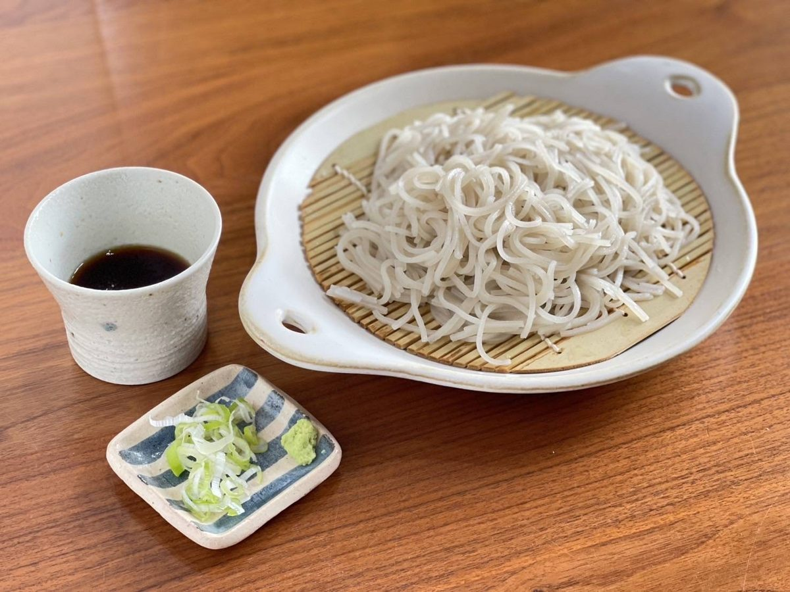
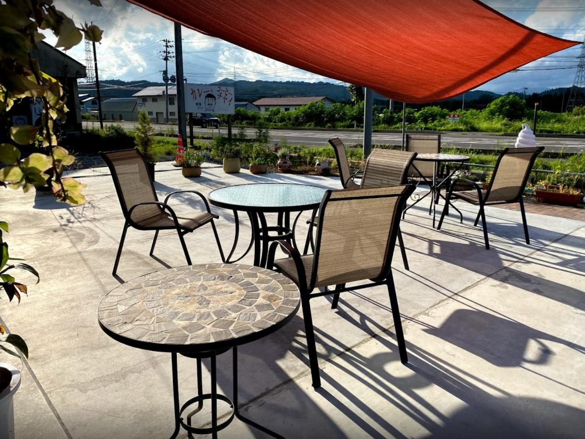
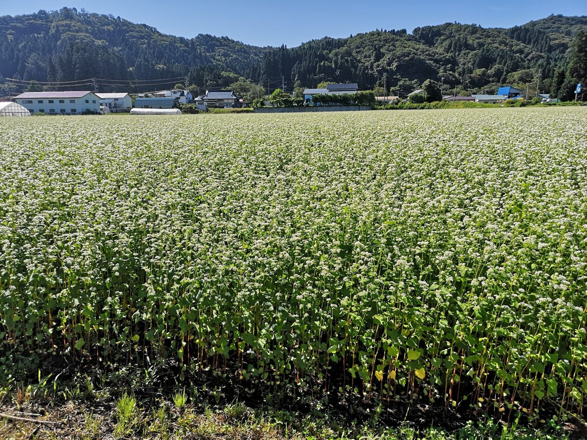
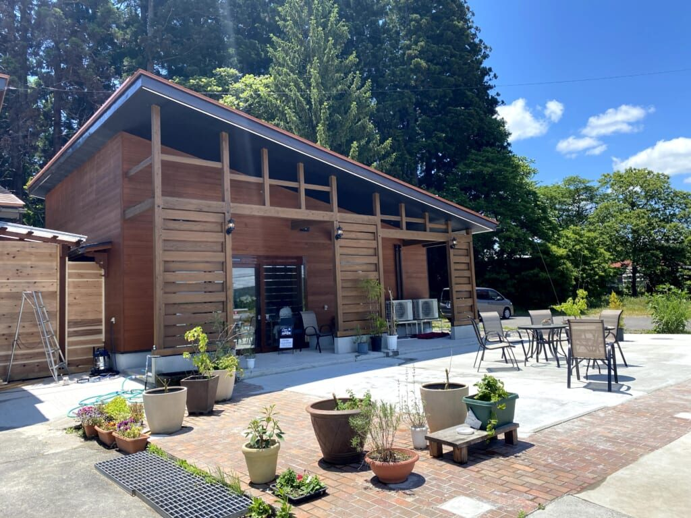
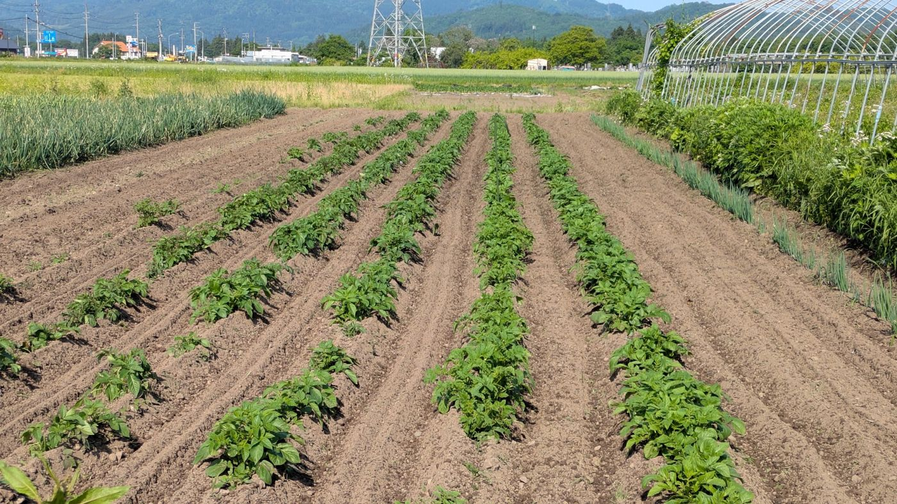
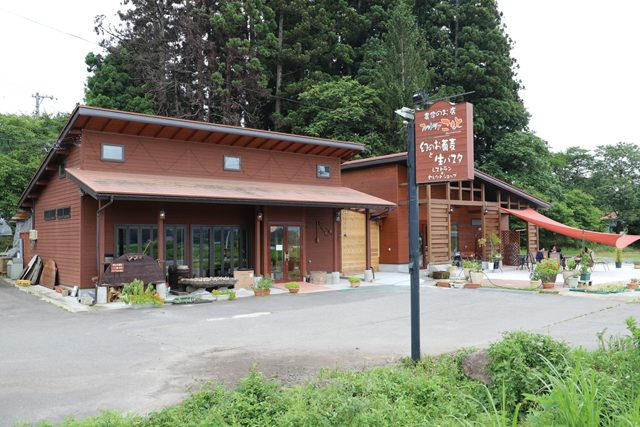
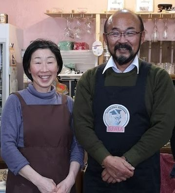

幻の蕎麦
蕎麦の実の中心部だけ、全体の5割ほどの粉で打つ十割の高寺芯そば。地元の蕎麦打ち名人の手打ちです。

地元の素材でつくる、
自給自足のお裾分け。
会津坂下・坂本の農家レストラン。自家栽培の野菜とお米、店の前の畑の蕎麦と小麦で、高寺芯そばも生パスタもピッツァもつくっています。
「こもと」は「地元素材のお料理を食べていただきたい」という思いから、平成28年5月にオープンした農家レストランです。
自家生産の野菜やお米、店の前の畑で二毛作する蕎麦と小麦「ゆきちから」を中心に、高寺芯そば、生パスタ、ピッツァ、カレーやソースカツ丼まで、素材を活かしたメニューをそろえています。




1991年、「何でも自分たちで作ってみよう」と農業を始めました。お米から野菜、養鶏へと広がり、平成28年5月にこの農家レストランを開きました。
水田は11ヘクタール、畑は110アール。畑は有機肥料100％・農薬不使用です。坂本地区の畑では蕎麦と小麦「ゆきちから」を二毛作し、その地粉がお蕎麦やピッツァになります。
蕎麦のたれは、かつて営んでいたそば屋「みやま茶屋」創業以来の仕込みを受け継いでいます。
蕎麦の実の中心部だけ、全体の5割ほどの粉で打つ十割の高寺芯そば。地元の蕎麦打ち名人の手打ちです。
国産のデュラム小麦「セトデュール」で打つ生パスタ。自家素材のトマトソースや、自家製クルミのバジルソースで。
福島県産小麦「ゆきちから」の生地から自家製。自家製トマトソースと地元の素材で焼き上げます。
約300羽を自家栽培の飼料米で育てています。淡いレモン色の黄身が、プリンやオムライスの色になります。
今は無き「江戸鮨」のオーナーのお祖母が作ったソースのレシピを受け継いだ、伝統の味のソースカツ。お肉はやまと豚を使い、自家生産のお米を贅沢に使用しています。
おすすめ珈琲は、「田代珈琲」から仕入れたスペシャルティコーヒーの生豆を自家焙煎。紅茶はガネッシュの「新茶の紅茶」。ミルクは地元の幻の牛乳「べこの乳」をあわせます。



団体・貸切のご相談はお電話でどうぞ。お水とおしぼりはセルフサービスです。ご予約、団体・貸切のご相談、取材のご依頼など、お気軽にメールでお問い合わせください。